IAPWS G7-04¶
The computation is based on the parameters provided by the IAPWS 2004 [1].
Henry Contant: kh¶
The Henry constant is defined as shown in equation Eq.1. 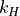 is expressed in MPa.
(1)¶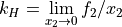
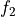: liquid-phase fugacity
 : mole fraction of the solute
: mole fraction of the solute
The Henry’s constant is given as a function of temperature by:
(2)¶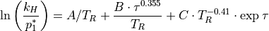
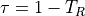
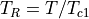
: critical temperature of the solvent as recommended by IAPWS [2]
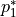 is the vapor pressure of the solvent at the temperature of interest and is calculated from the correlation of Wagner and Pruss for
 [3]
and from the correlation of Harvey and Lemmon for [4].
[3]
and from the correlation of Harvey and Lemmon for [4].
Both equations have the form:
(3)¶
 is 6 for and 5 for
is 6 for and 5 for is the critical pressure of the solvent recommended by IAPWS [2]
Vapor-Liquid Distribution Constant: kd¶
The liquid-vapor distribution constant is defined as shown in equation Eq.4. 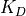 is adimensional.
(4)¶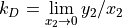
- : mole fraction of the solute
 is the vapor-phase solute mole fraction in equilibrium with the liquid
is the vapor-phase solute mole fraction in equilibrium with the liquid
The vapor-liquid distribution constant k_D is given as a function of temperature by:
(5)¶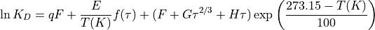
 : -0.023767 for
: -0.023767 for In both cases, has the following form:
(6)¶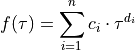
- is 6 for and 4 for
Molar fractions¶
The molar fractions and can be expressed from the
equations Eq.1 and Eq.4 as shown in Eq.7.
(7)¶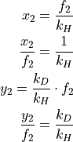
By fixing at 1.0 it comes that the molar fractions
and are then expressed per
unit of pressure as shown in equation Eq.8 .
(8)¶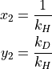
The molar fractions can be converted to solubilties in ppm or cm3/kg as shown in equation Eq.9
by considering dilute solutions.  is the considered gas and the solvent is either
or .
is the considered gas and the solvent is either
or .
(9)¶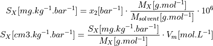
Available gases¶
and can be computed for the following gases:
in water: He, Ne, Ar, Kr, Xe, H2, N2, O2, CO, CO2, H2S, CH4, C2H6, SF6
in heavywater: He, Ne, Ar, Kr, Xe, D2, CH4
Plots¶
The evolution of in and , between 0°C and 360°C, are shown in figures
Fig. 1 and Fig. 2.
{kind=link}
Fig. 1 kh in H2O¶
{kind=link}
Fig. 2 kh in D2O¶
The evolution of in and , between 0°C and 360°C, are shown in figures
Fig. 3 and Fig. 4.
{kind=link}
Fig. 3 kh in H2O¶
{kind=link}
Fig. 4 kd in D2O¶